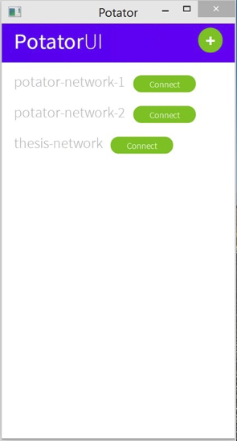
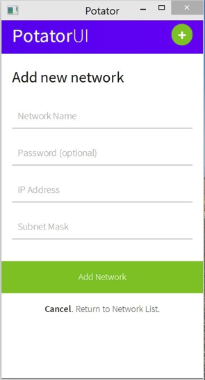

User Manual¶
System Overview¶
The Potator application allows users to communicate peer-to-peer, similar to a switched network, over the Tor network. It is the bridge between the Tor network and the regular IP network. Potator will open a Virtual Network Interface Card to interface with applications running under Windows, while also creating an instance of Tor for which to send packets through. Any packet that is bound for another client in the Potator Network would pass through the Virtual NIC, the Potator application, and then the Tor application which would route the packet through the Tor network. Said packet would enter the destination machine in a similar fashion it left the source machine.
Peer to peer communication is not inherently supported by Tor. Potator will accomplish peer to peer connectivity by using the Hidden Service feature of Tor. Each Potator node, a computer connected to a Potator network, will have an onion URL, thus allowing two way connectivity between nodes. Commands called Onion URL Resolution Protocol (OURP) commands are sent between nodes in the Potator network to facilitate network discovery and node connectivity. All packets traversing the Potator network are encapsulated in Spores, data containers Potator uses for communication.
System Requirements¶
Minimum Requirements¶
| Processor | 1 GHz or faster 32-bit (x86) or 64-bit(x64) processor. |
| Operating System | Windows 7 or a more recent Windows OS |
| Memory | 1 GB RAM (32-bit) or 2GB RAM (64-bit) |
| Hard Disk space | 100MB available disk space |
Other Requirements¶
| Tor Expert Bundle | https://www.torproject.org/dist/torbrowser/4.0.6/tor-win32-tor-0.2.5.11.zip |
| Tap Windows | https://swupdate.openvpn.org/community/releases/tap-windows-9.9.2_3.exe |
| Node.js | https://nodejs.org/download/ |
| Potator UI | Instructions found in getting started section |
Getting Started¶
Installing Potator is as simple as extracting the 32-bit (x86) or the 64-bit (x64) version to the root of your hard drive (normally C:) and then adding the said directory to your PATH environment variable. At this point, Potator is now usable through the command line. This manual however, does not cover how to use Potator through the command line, but instead covers setting up and using Potator with Potator UI, a user interface created for Potator.
Make sure that you have all the other dependencies listed under ‘Other Requirements’ before proceeding to install Potator UI. The following instructions are done using a command line, inside the Potator UI folder provided along with the installation files.
Installing Potator UI¶
| Install Bower and Grunt | npm install -g bower
npm install -g grunt
npm install -g grunt-cli
|
| Install Potator UI and build its dependencies | cd /build
npm install
|
| Install Potator UI app dependencies | cd ../potatorui-app
bower install
npm install
|
| Run grunt once to compile Jade and Sass files | grunt
|
| Download atom-shell | cd ../build
grunt download-atom-shell
|
| Build and luanch Potator UI | ./build/atom-shell/atom.exe ./potatorui-app/ |
At this point, if everything was performed correctly, Potator UI will have launched and you are now ready to use Potator! Note: When running the Potator UI again, only the last step needs to be done.
Using Potator¶
As mentioned in getting started, the manual covers using Potator through Potator UI. Below are screen by screen instructions on using the Potator UI. Upon launching Potator, you are greeting with this screen
If it is your first time launching Potator and Potator UI, this screen is empty as you do not have any existing networks.
Creating a Network¶
To create a network, click on the + sign found on the upper right hand screen. It would lead you to the ‘Add new network’ section as seen on the screen.
| Network Name | Local identifier for your network. This is stored locally.
People looking to connect to you does not need to have the same network name.
Using a network name that already exists overwrites the old network with
sade name.
|
| Password | Optional field. Leave empty if you do not want to require a password when
connecting to the network you are creating.
|
| IP Address | Your IP address in the network. Potator does not have any DHCP capabilities.
Please determine the IP addresses you will use outside Potator.
If you do not know what to put, default to the value ’10.10.10.1’, and then have
other users utilize the following addresses after.
(e.g.: 10.10.10.2, 10.10.10.3, and so on)
|
| Subnet Mask | Subnet mask of the network. If you do not know what to put,
default to the value ‘255.255.255.0
|
Note that upon creating a network, you would still have to connect to it!
Joining a Network¶

If you are connecting to your own network, leave this field blank. If you are connecting to another network, you would need to enter the onion URL of any user connected to that network.

To determine the Onion URL, ask anyone who is connected to the network you are connecting to click the network name, and provide you with any Onion URL listed as seen on the screen just shown.
Troubleshooting¶
Potator and Potator UI are at its early stages, and while there is an accompanying command line behind the UI to provide error messages, none of them are descriptive at this point. If you are able to use Potator, and encounter a problem, feel free to post an issue in their respective GitHub repositories listed below.
| Potator | https://github.com/mixxorz/Potator/issues |
| Potator-UI | https://github.com/monliclican/potatorui-atom/issues |
At this point in writing, it’s worth taking note that these repositories are set to private. You would have to contact the authors of the respective repositories to start contributing.